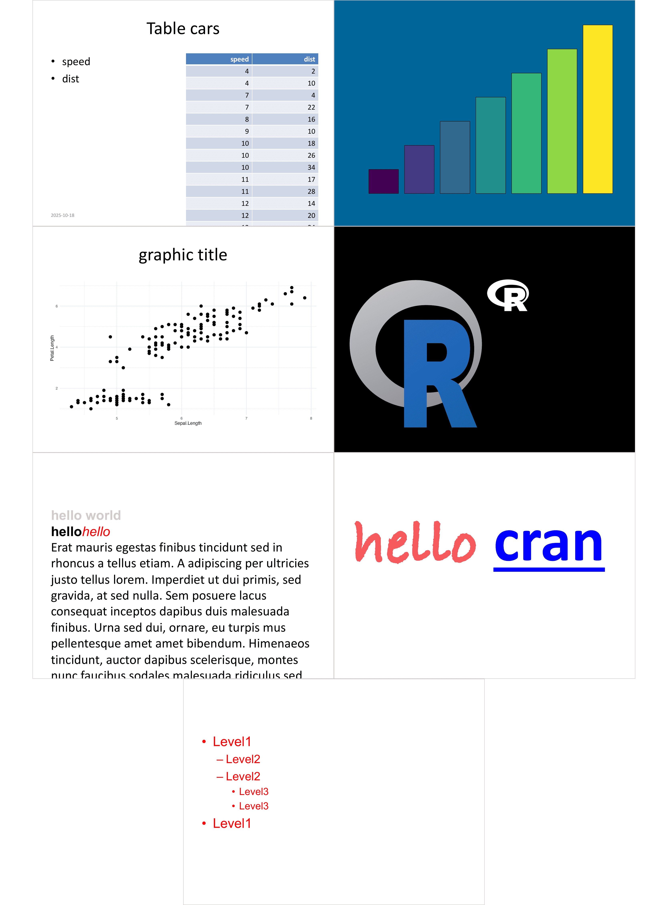

| ph_with {officer} | R Documentation |
add an object into a new shape in the current slide. This function is able to add all supported outputs to a presentation. See section Methods (by class) to see supported outputs.
ph_with(x, value, location, ...) ph_with.character(x, value, location, ...) ph_with.numeric(x, value, location, format_fun = format, ...) ph_with.factor(x, value, location, ...) ph_with.logical(x, value, location, format_fun = format, ...) ph_with.Date(x, value, location, date_format = NULL, ...) ph_with.block_list(x, value, location, level_list = integer(0), ...) ph_with.unordered_list(x, value, location, ...) ph_with.data.frame( x, value, location, header = TRUE, tcf = table_conditional_formatting(), alignment = NULL, ... ) ph_with.gg(x, value, location, res = 300, alt_text = "", scale = 1, ...) ph_with.plot_instr(x, value, location, res = 300, ...) ph_with.external_img(x, value, location, use_loc_size = TRUE, ...) ph_with.fpar(x, value, location, ...) ph_with.empty_content(x, value, location, ...) ph_with.xml_document(x, value, location, ...)
x |
an rpptx object |
value |
object to add as a new shape. Supported objects are vectors, data.frame, graphics, block of formatted paragraphs, unordered list of formatted paragraphs, pretty tables with package flextable, editable graphics with package rvg, 'Microsoft' charts with package mschart. |
location |
a placeholder location object or a location short form. It will be used
to specify the location of the new shape. This location can be defined with a call to one
of the |
... |
further arguments passed to or from other methods. When
adding a |
format_fun |
format function for non character vectors |
date_format |
A format string for dates (default |
level_list |
The list of levels for hierarchy structure as integer values. If used the object is formated as an unordered list. If 1 and 2, item 1 level will be 1, item 2 level will be 2. |
header |
display header if TRUE |
tcf |
conditional formatting settings defined by |
alignment |
alignment for each columns, 'l' for left, 'r' for right and 'c' for center. Default to NULL. |
res |
resolution of the png image in ppi |
alt_text |
Alt-text for screen-readers. Defaults to |
scale |
Multiplicative scaling factor, same as in ggsave |
use_loc_size |
if set to FALSE, external_img width and height will be used. |
ph_with.character(): add a character vector to a new shape on the
current slide, values will be added as paragraphs.
ph_with.numeric(): add a numeric vector to a new shape on the
current slide, values will be be first formatted then
added as paragraphs.
ph_with.factor(): add a factor vector to a new shape on the
current slide, values will be be converted as character and then
added as paragraphs.
ph_with.Date(): add a Date object vector to a new shape on the
current slide, values will be be first converted to character.
ph_with.block_list(): add a block_list() made
of fpar() to a new shape on the current slide.
ph_with.unordered_list(): add a unordered_list() made
of fpar() to a new shape on the current slide.
ph_with.data.frame(): add a data.frame to a new shape on the current slide with
function block_table(). Use package 'flextable' instead for more
advanced formattings.
ph_with.gg(): add a ggplot object to a new shape on the
current slide. Use package 'rvg' for more advanced graphical features.
ph_with.plot_instr(): add an R plot to a new shape on the
current slide. Use package 'rvg' for more advanced graphical features.
ph_with.external_img(): add a external_img() to a new shape
on the current slide.
When value is a external_img object, image will be copied
into the PowerPoint presentation. The width and height
specified in call to external_img() will be
ignored, their values will be those of the location,
unless use_loc_size is set to FALSE.
ph_with.fpar(): add an fpar() to a new shape
on the current slide as a single paragraph in a block_list().
ph_with.empty_content(): add an empty_content() to a new shape
on the current slide.
ph_with.xml_document(): add an xml_document object to a new shape on the
current slide. This function is to be used to add custom openxml code.
The location argument of ph_with() either expects a location object as returned by the
ph_location_* functions or a corresponding location short form (string or numeric):
| Location function | Short form | Description |
ph_location_left() | "left" | Keyword string |
ph_location_right() | "right" | Keyword string |
ph_location_fullsize() | "fullsize" | Keyword string |
ph_location_type("body", 1) | "body [1]" | String: type + index in brackets (1 if omitted) |
ph_location_label("my_label") | "my_label" | Any string not matching a keyword or type |
ph_location_id(1) | 1 | Length 1 integer |
ph_location(0, 0, 4, 5) | c(0,0,4,5) | Length 4 numeric, optionally named, c(top=0, left=0, ...) |

Specify placeholder locations with ph_location_type, ph_location,
ph_location_label, ph_location_left, ph_location_right,
ph_location_fullsize, ph_location_template. phs_with is a sibling of
ph_with that fills multiple placeholders at once. Use add_slide to add new slides.
# this name will be used to print the file
# change it to "youfile.pptx" to write the pptx
# file in your working directory.
fileout <- tempfile(fileext = ".pptx")
doc_1 <- read_pptx()
sz <- slide_size(doc_1)
# add text and a table ----
doc_1 <- add_slide(doc_1, layout = "Two Content", master = "Office Theme")
doc_1 <- ph_with(
x = doc_1,
value = c("Table cars"),
location = ph_location_type(type = "title")
)
doc_1 <- ph_with(
x = doc_1,
value = names(cars),
location = ph_location_left()
)
doc_1 <- ph_with(
x = doc_1,
value = cars,
location = ph_location_right()
)
doc_1 <- ph_with(
x = doc_1,
value = Sys.Date(),
location = ph_location_type("dt")
)
# add a base plot ----
anyplot <- plot_instr(code = {
col <- c(
"#440154FF",
"#443A83FF",
"#31688EFF",
"#21908CFF",
"#35B779FF",
"#8FD744FF",
"#FDE725FF"
)
barplot(1:7, col = col, yaxt = "n")
})
doc_1 <- add_slide(doc_1, "Title and Content")
doc_1 <- ph_with(
doc_1,
anyplot,
location = ph_location_fullsize(),
bg = "#006699"
)
# add a ggplot2 plot ----
if (require("ggplot2")) {
doc_1 <- add_slide(doc_1, "Title and Content")
gg_plot <- ggplot(data = iris) +
geom_point(
mapping = aes(Sepal.Length, Petal.Length),
size = 3
) +
theme_minimal()
doc_1 <- ph_with(
x = doc_1,
value = gg_plot,
location = ph_location_type(type = "body"),
bg = "transparent"
)
doc_1 <- ph_with(
x = doc_1,
value = "graphic title",
location = ph_location_type(type = "title")
)
}
# add a external images ----
doc_1 <- add_slide(doc_1, layout = "Title and Content", master = "Office Theme")
doc_1 <- ph_with(
x = doc_1,
value = empty_content(),
location = ph_location(
left = 0,
top = 0,
width = sz$width,
height = sz$height,
bg = "black"
)
)
svg_file <- file.path(R.home(component = "doc"), "html/Rlogo.svg")
if (require("rsvg")) {
doc_1 <- ph_with(
x = doc_1,
value = "External images",
location = ph_location_type(type = "title")
)
doc_1 <- ph_with(
x = doc_1,
external_img(svg_file, 100 / 72, 76 / 72),
location = ph_location_right(),
use_loc_size = FALSE
)
doc_1 <- ph_with(
x = doc_1,
external_img(svg_file),
location = ph_location_left(),
use_loc_size = TRUE
)
}
# add a block_list ----
dummy_text <- readLines(system.file(
package = "officer",
"doc_examples/text.txt"
))
fp_1 <- fp_text(bold = TRUE, color = "pink", font.size = 0)
fp_2 <- fp_text(bold = TRUE, font.size = 0)
fp_3 <- fp_text(italic = TRUE, color = "red", font.size = 0)
bl <- block_list(
fpar(ftext("hello world", fp_1)),
fpar(
ftext("hello", fp_2),
ftext("hello", fp_3)
),
dummy_text
)
doc_1 <- add_slide(doc_1, "Title and Content")
doc_1 <- ph_with(
x = doc_1,
value = bl,
location = ph_location_type(type = "body")
)
# fpar ------
fpt <- fp_text(
bold = TRUE,
font.family = "Bradley Hand",
font.size = 150,
color = "#F5595B"
)
hw <- fpar(
ftext("hello ", fpt),
hyperlink_ftext(
href = "https://cran.r-project.org/index.html",
text = "cran",
prop = fpt
)
)
doc_1 <- add_slide(doc_1, "Title and Content")
doc_1 <- ph_with(
x = doc_1,
value = hw,
location = ph_location_type(type = "body")
)
# unordered_list ----
ul <- unordered_list(
level_list = c(1, 2, 2, 3, 3, 1),
str_list = c("Level1", "Level2", "Level2", "Level3", "Level3", "Level1"),
style = fp_text(color = "red", font.size = 0)
)
doc_1 <- add_slide(doc_1, "Title and Content")
doc_1 <- ph_with(
x = doc_1,
value = ul,
location = ph_location_type()
)
print(doc_1, target = fileout)
# Example using short-form locations ----
x <- read_pptx()
x <- add_slide(x, "Title Slide")
x <- ph_with(x, "A title", "Title 1") # label
x <- ph_with(x, "A subtitle", 3) # id
x <- ph_with(x, "A left text", "left") # keyword
x <- ph_with(x, Sys.Date(), "dt[1]") # type + index
x <- ph_with(x, "More content", c(5, .5, 5, 2)) # numeric vector (left, top, width, heigh)
# \dontrun{
# print(x, preview = TRUE) # opens file locally
# }